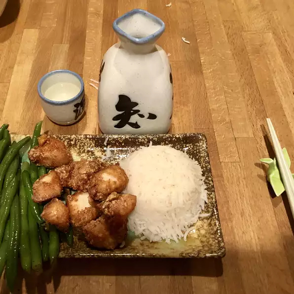

Chicken Karaage (Japanese Fried Chicken)

Description
Karaage is a Japanese-style fried chicken, flavoured with ginger, garlic and sake and soy sauce. It is served as an appetizer or awith rice and veggies to complete a meal!
Recipe is taken from: https://www.allrecipes.com/recipe/246854/chicken-karaage-japanese-fried-chicken/
Ingredients
- 2 tablespoons soy sauce
- 1 tablespoon sake (Japanese rice wine)
- 2 teaspoons grated fresh ginger
- 1.5 pounds boneless, skinless chicken breasts, cut into bite-size pieces
- 2 cups vegetable oil for frying
- 0.75 cup cornstarch
Steps
- Combine soy sauce, sake, and ginger in a large bowl. Add chicken; turn to coat. Cover with plastic wrap and let marinate in the refrigerator, about 30 minutes.
- Heat oil in a deep-fryer or large saucepan to 350 degrees F (175 degrees C).
- Place cornstarch in a large resealable plastic bag. Add chicken; seal bag and toss until chicken is coated with cornstarch.
- Fry chicken in batches until juices run clear and it is golden brown, 2 to 3 minutes. Drain on paper towels or on a wire rack.
Back to home